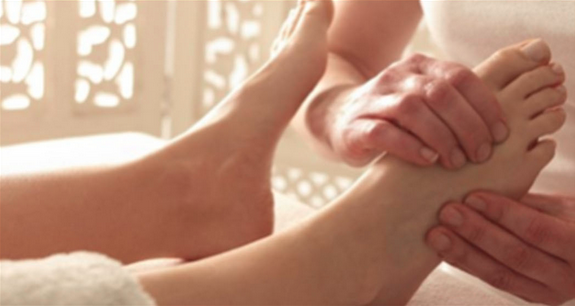

Therapeutic Massage
Each customized massage is 60, 90 or 120 minutes and is available at Riverstone Center or in your home. Chair massages are also available at your business, function or event.
Treatment Options
Therapeutic Massage:
Body Assesment:
A body assessment begins with speaking with you about your body, then visually checking posture and range of motion. It continues on the table as I palpate muscles. This gives me information about what you need and allows me to customize your treatment.
Medical Massage:
Therapeutic Massage addressing body posture, specific body pain or areas of restricted range of motion using a combination of deep tissue, myofascial release, trigger point therapy and stretching. This can be done in a specific body area or is great in combination with a full body massage.
Massage My Back:
I can use the full session on your back or just spend a lot more time there before I move on. I use a combination of deep tissue, myofascial release, trigger point therapy, and Swedish therapeutic massage to address tightness, pain, stiffness and any issues I find. I work in the upper back, shoulders, neck, lower back and into the glutes.
Swedish Relaxing Therapeutic Detox Massage:
A pleasurable full body massage using long strokes and medium pressure that helps the body to relax and detoxify. You can focus on your breathing or just enjoy the massage while muscle tightness and stress are relieved. Massage helps cells release toxic build-up, increases circulation and oxygen in the blood, and aids in releasing stress-reducing hormones in the body. This is a great one in you just want to let go and receive.
Melt My Feet:
A full body therapeutic massage with a lot of time spent on the ankles, feel, hands and wrists using reflexology techniques. (OMG, this really feels good.)
Make Me Surrender:
A combination of Deep Tissue, Myofascial, Trigger Point Therapy, Reflexology and Swedish massage techniques. I follow your body to address any muscular issues I find that may be causing you pain, stiffness or imbalance. This massage is the one for you if you like deep, firm pressure. I utilize techniques to release tight muscles and trigger points.
Emotional Let-Go Massage:
During any of your chose massages, I encourage you to express what you are feeling on the table as you experience the massage. You can let it out and let it go. I honor the feeling process and value awareness, self expression and self acceptance.
Sports Massage:
Yogi Massage:
I spend time releasing particular muscles and muscle groups to help you increase range of motion and flexibility so you can move deeper into your favorite yoga pose.
Golf Swing Massage:
I work on major muscle groups used in a golf swing to increase rotation of the shoulders and hips and address any lower back stiffness. It includes releasing the glutes, quads and hamstrings.
Athletic Recovery Massage:
I address specific muscles to help the healing process of a sports related injury using massage and stretching. I also address stiffness, tightness and soreness due to overexertion.
Sports Conditioning Massage:
Promotes body conditioning while helping to prevent sports injury. Assisted stretching increases range of motion while you train for peak performance.
